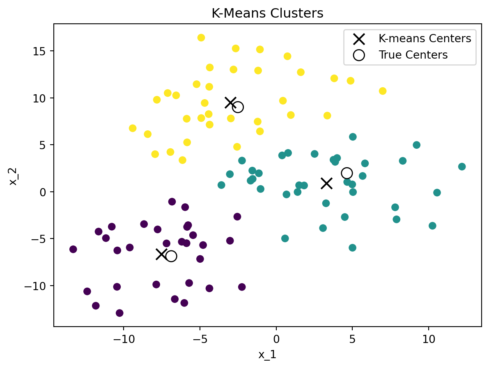
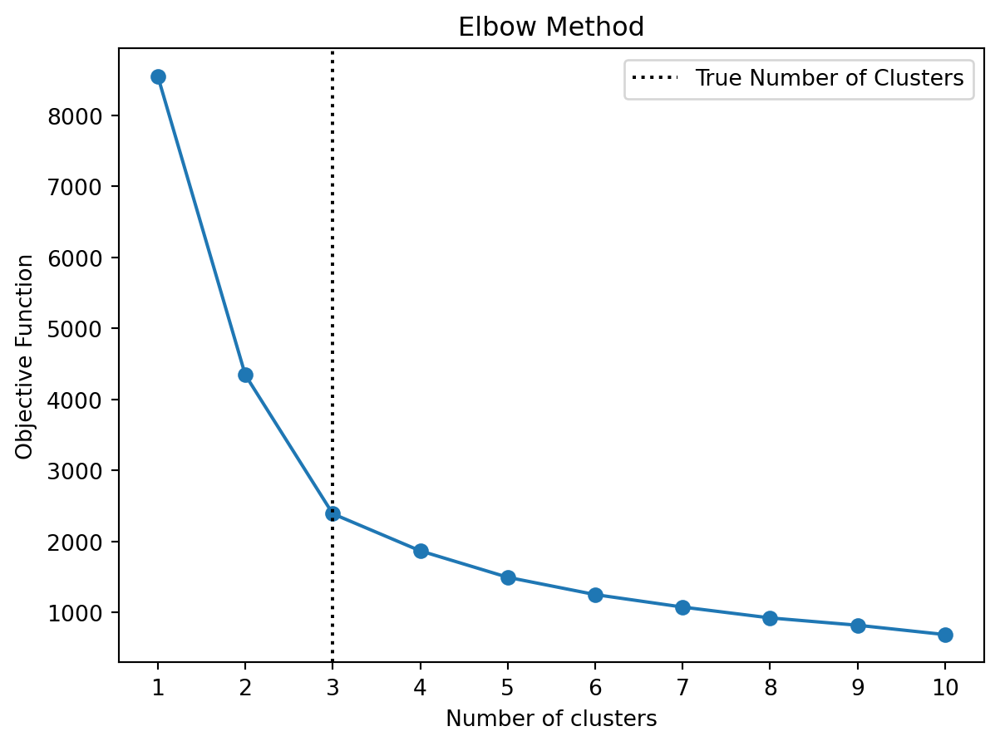

Appendix A — Unsupervised Learning
In this chapter, we will introduce some unsupervised learning methods that are commonly used in machine learning.
A.1 K-means Clustering
K-means is a method that is used for finding clusters in a set of unlabeled data meaning that it is an unsupervised learning method. For the algorithm to work, one has to choose a fixed number of clusters \(K\) for which the algorithm will then try to find the cluster centers (i.e., the means) using an iterative procedure. The basic algorithm proceeds as follows given a set of initial guesses for the \(K\) cluster centers:
- Assign each data point to the nearest cluster center
- Recompute the cluster centers as the mean of the data points assigned to each cluster
The algorithm iterates over these two steps until the cluster centers do not change or the change is below a certain threshold. As an initial guess, one can use, for example, \(K\) randomly chosen observations as cluster centers.
We need some measure of disimilarity (or distance) to assign data points to the nearest cluster center. The most common choice is the Euclidean distance. The squared Euclidean distance between two points \(x\) and \(y\) in \(p\)-dimensional space is defined as
\[d(x_i, x_j) = \sum_{n=1}^p (x_{in} - x_{jn})^2=\lVert x_i - x_j \rVert^2\]
where \(x_{in}\) and \(x_{jn}\) are the \(n\)-th feature of the \(i\)-th and \(j\)-th observation in our dataset, respectively.
The objective function of the K-means algorithm is to minimize the sum of squared distances between the data points and their respective cluster centers
\[\min_{C, \{m_k\}_{k=1}^K}\sum_{k=1}^K \sum_{C(i)=k} \lVert x_i - m_k \rVert^2\]
where second sum sums up over all elements \(i\) in cluster \(k\) and \(\mu_k\) is the cluster center of cluster \(k\).
The K-means algorithm is sensitive to the initial choice of cluster centers. To mitigate this, one can run the algorithm multiple times with different initial guesses and choose the solution with the smallest objective function value.
The scale of the data can also have an impact on the clustering results. Therefore, it is often recommended to standardize the data before applying the K-means algorithm. Furthermore, the Euclidean distance is not well suited for binary or categorical data. Therefore, one should only use the K-means algorithm for continuous data.
How to choose the number of clusters \(K\)? One can use the so-called elbow method to find a suitable number of clusters. The elbow method plots the sum of squared distances (i.e., the objective function of K-means) for different \(K\). The idea is to choose the number of clusters at the “elbow” of the curve, i.e., the point where the curve starts to flatten out. Note that the curve starts to flatten out when adding more clusters does not significantly reduce the sum of squared distances anymore. This usually happens to be the case when the number of clusters exceeds the “true” number of clusters in the data. However, this is just a heuristic and it might not always be easy to identify the “elbow” in the curve.


Figure A.1 shows an example of the K-means clustering algorithm applied to a dataset with 3 clusters. The left-hand side shows the clusters found by the K-means algorithm, while the right-hand side shows the elbow method to find the optimal number of clusters. The elbow method suggests that the optimal number of clusters is 3, which is the true number of clusters in the dataset.